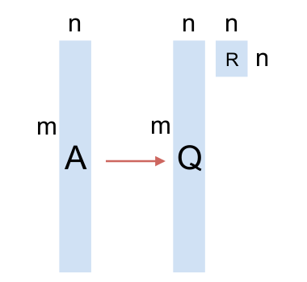

[5] adlı yazı tek makinalı ortamda matris çarpımının nasıl yapılacağını, ve nasıl görülecebileğini anlattı. Satır bakış açısı, kolon bakış açısı işlendi. Parallel (Hadoop), eşle/indirge ortamında matris çarpımını nasıl yaparız? Mesela $A^TA$'yi ele alalım. Bu çarpım oldukça önemli çünkü başka sonuçlar için de kullanılabiliyor. Mesela $A$ üzerinde $QR$ ayrıştırması yapmak isterseniz (bkz. Lineer Cebir ders notlarımız) bu çarpım kullanılabiliyor.
Nasıl? QR ayrıştırması kolonların hepsi bilindiği gibi birbirine dik (orthogonal) birim vektörler olan bir $Q$ matrisi ve üst üçgensel (upper triangular) bir $R$ matrisi oluşturur. Ayrıştırmanın $A^TA$ ile bağlantısı nedir? Eğer $A$ yerine onun ayrıştırmasını $QR$ koyarsak,
$$ C = A^TA = (QR)^T (QR) = R^T Q^T QR $$
Tum $Q$ vektorleri birbirine dik, ve birim vektorler ise, $Q^T Q$ birim matrisi $I$ olur. O zaman
$$ C = R^T Q^T QR = R^T R $$
Yani
$$ C = R^TR $$
Peki $A^TA$ hesaplayıp (böylece $R^TR$'yi elde edince) onun içinden $R$'yi nasıl çekip çıkartırız? Şimdi Cholesky ayrıştırması kullanmanın zamanı. Cholesky ayrıştırması (herhangi bir simetrik pozitif kesin $C$ matrisi üzerinde)
$$C = LL^T$$
olarak bilinir, yani bir matris alt üçgensel (lower triangular -ki L harfi oradan geliyor-) $L$ matrisine ve onun devriği olan üst üçgensel $L^T$'nin çarpımına ayrıştırılır. Elimizde $R^TR$ var, ve ona benzer $LL^T$ var, $R$ bilindiği gibi üst üçgensel, $L$ alt üçgensel, $L^T$ ve $R$ birbirine eşit demek ki. Yani $A^TA$ üzerinde sayısal hesap kütüphenimzin Cholesky çağrısı kullanmak bize $QR$'in $R$'sini verir.
Şu anda akla şu soru gelebilir: madem kütüphane çağrısı yaptık, niye $A$ üzerinde kütüphenimizin $QR$ çağrısını kullanmıyoruz?
Cevap Büyük Veri argümanında saklı. Bu ortamda uğraşılan verilerde $A$ matrisi $m \times n$ boyutlarındadır, ve $m$ milyonlar, hatta milyarlarca satır olabilir. Şimdilik $m >> n$ olduğunu farzedelim, yani $m$, $n$'den "çok, çok büyük", yani "boyut kolonlarının", ki $n$, sayısı binler ya da onbinlerde. Bu gayet tipik bir senaryo aslında, ölçüm noktaları (boyutlar) var, ama çok fazla değil, diğer yandan o ölçümler için milyonlarca veri noktası toplanmış. Tipik bir aşırı belirtilmiş (överdetermined) sistem - ki en az kareler (least squares) gibi yaklaşımların temel aldığı sistemler bunlardır, eldeki denklem sayısından daha fazla ölçüm noktası vardır. Bu arada en az karelerden bahsettik, $QR$'in kullanıldığı alanlardan biri en az karelerin çözümüdür.
Argümana devam ediyoruz, kütüphane qr çağrısını $A$ üzerinde yaparsak, $m
\times n$ gibi devasa bir matris üzerinde işlem yapmak gerekir. Ama $A^TA$
üzerinde işlem (Cholesky) yaparsak, ki bu çarpımın boyutu $n \times m \cdot m
\times n = n \times n$, yani çok daha ufak bir matristir. $A^TA$'in işlem bedeli
çok ufak, birazdan anlatacağımız yöntem sayesinde bu bedel $O(m)$.
Paralel $A^TA$
Paralel çarpıma gelelim. Öncelikle elimizdeki becerilere (çapabilities) bakalım. Hadoop ortamı bize aşırı büyük bir dosyayı otomatik olarak makinalara bölerek bir hesap yapılması gerektiğinde o hesabın her makinadaki veri parçası üzerinde yaptırılabilmesini sağlıyor.
$A^TA$ örneğinde eldeki veri $A$, ve "çok olan" $A$'nin satırları, yani $m \times n$ boyutlarında matris var ve $m$ devasa boyutlarda (olabilir). Bir $A$ dosyası tipik olarak şöyle gözükecek:
!head -5 A_matrix
3 4 5 6
3 4 5 2
3 6 7 8
2 2 2 2
9 9 3 3
Eşle/indirgeye gelelim: Eğer çarpıma satır bakışını hatırlarsak,
Bu bakışa göre soldaki matriste satır boyunca giderken, sağdakinde ona tekabül eden kolon boyunca gidiyoruz, ve birbirine eşlene her ögeyi çarpıyoruz, ve çarpımları topluyoruz.
Şimdi bu matrisin Hadoop'ta parça parça bize geldiğini düşünürsek (ki üstte hayali bir ilk parçayı kırmızı çizgi ile belirttik), bu parça içinde mesela ilk satırı kendisi ile çarparken (1'inci ok) aynı blok içindeyiz. Bu önemli bir nokta, çarparken bloklar arası geçiş yok.
Tabii ki nihai çarpımdaki (1,1) hesabı için $A^T$'deki birinci satırın {\em tamamen} $A$'daki birinci kolonla nokta çarpımının bitirilmiş olması gerekir, ama şimdi düşünelim, başka bir makinaya ikinci parça verilmiş ise, makinada o birinci satırın geri kalanı çarpılıp toplanacaktır (2. ok), ve eğer tüm parçalar, tüm makinalarda bu şekilde işlenirse, (1,1) hesabı için o makinalardaki o tüm çarpımları alıp nihai bir noktada toplamak bize (1,1) için nihai sonucu verecektir. Bu tipik bir eşle/indirge hesabı olabilir, eşle safhasında eldeki parça $A_p$ üzerinde $A_p^T A_p$ yapılır, indirge safhasında bu parçalar toplanır.
Eşleme safhasından yayınlanacak (emit) anahtar ve değerler, bizce, $A_p^T A_p$ içindeki her satırın satır no'su ve satır değeri olmalı. Niye? (Aynı sabit bir anahtar değeriyle beraber $A_p^T A_p$'in tamamını da yayınlayabilirdik).
Hatırlayalım, nihai çarpım $n \times n$ boyutunda, her parça $p$ olsa bile, $n \times p \cdot p \times n$ yine bize $n \times n$ veriyor. Yani her makina $n \times n$ boyutunda bir çarpım sonucunu üretiyor. Evet $n$ nispeten küçük bir sayı, fakat yine de onbinlerde olsa bile $10,000 \times 10,000$ mesela, büyük bir sayı. Eğer tüm toplamı tek bir indirgeyici makinaya yaptırırsak, pek çok $n \times n$ boyutunda matrisin toplamı bu makinayı kaşar. O sebeple indirgeme sonrası matrisleri değil, o matrislerin her $n$ satırını satır no'su ile yayınlıyoruz, böylece aynı satırlar aynı indirgeyiciye gidip orada toplanıyorlar, ama birçok indirgeyici var yani toplama işlemi paralel hale gelmiş oluyor. Tabii indirgeme sonrası o sonuçlar yayınlanıyor, ve satır no'ya göre doğal olarak sıralanmış halde nihai sonuç çıkıyor. Ama toplama işlemi paralel. Kod alttaki gibi
from mrjob.job import MRJob
from mrjob.protocol import PickleProtocol
import numpy as np, sys
class MRAtA(MRJob):
INTERNAL_PROTOCOL = PickleProtocol
def __init__(self, *args, **kwargs):
super(MRAtA, self).__init__(*args, **kwargs)
self.buffer_size = 4
self.n = 4
self.data = []
self.A_sum = np.zeros((self.n,self.n))
def mapper(self, key, line):
line_vals = map(np.float,line.split())
self.data.append(line_vals)
if len(self.data) == self.buffer_size:
mult = np.dot(np.array(self.data).T,np.array(self.data))
self.data = []
for i, val in enumerate(mult):
yield i, val
def reducer(self, i, tokens):
for val in tokens:
self.A_sum[i,:] += np.array(val)
yield i, str(self.A_sum[i,:])
'''
At the end of processing a file, we might have some left over
rows in self.data that were not multiplied because we did not
reach buffer size. That condition is handled here. Whatever is
left over, is simply multiplied and emitted.
'''
def mapper_final(self):
if len(self.data) > 0:
mult = np.dot(np.array(self.data).T,np.array(self.data))
for i, val in enumerate(mult):
yield i, val
if __name__ == '__main__':
MRAtA.run()
Fonksiyon mapper_final MRJob kurallarına göre bir makinadaki tüm eşleme
bittikten sonra çağırılır, biz bu çengeli (hook), "artık parçaları çarpıp
yayınlamak için" kullandık, her parça $p$ büyüklüğünde, ama $m / p$ tam sayı
olmayabilir, yani işlem sonunda bazı artık veriler kalmış olabilir, onları
mapper_final içinde çarpıyoruz.
Bu arada kodun kendi içinde de bir "parçalama", "biriktirme ve işleme" yaptığına dikkat, yani 20,000 satır olabilir, iki tane eşleyici var ise her eşleyici bu verinin 10,000 satırını işler, ama ayrıca işleyiciler daha ufak ufak (üstte 4) parçalarla çarpım yapıyor.
!python AtA.py A_matrix
using configs in /home/burak/.mrjob.conf
creating tmp directory /tmp/AtA.burak.20131202.225802.256844
writing to /tmp/AtA.burak.20131202.225802.256844/step-0-mapper_part-00000
Counters from step 1:
(no counters found)
writing to /tmp/AtA.burak.20131202.225802.256844/step-0-mapper-sorted
> sort /tmp/AtA.burak.20131202.225802.256844/step-0-mapper_part-00000
writing to /tmp/AtA.burak.20131202.225802.256844/step-0-reducer_part-00000
Counters from step 1:
(no counters found)
Moving /tmp/AtA.burak.20131202.225802.256844/step-0-reducer_part-00000 -> /tmp/AtA.burak.20131202.225802.256844/output/part-00000
Streaming final output from /tmp/AtA.burak.20131202.225802.256844/output
0 "[ 420. 463. 264. 265.]"
1 "[ 463. 538. 351. 358.]"
2 "[ 264. 351. 316. 321.]"
3 "[ 265. 358. 321. 350.]"
removing tmp directory /tmp/AtA.burak.20131202.225802.256844
Karşılaştırmak için aynı işlemi tek bir script içinde yapalım,
A = np.loadtxt('A_matrix')
print np.dot(A.T,A)
[[ 420. 463. 264. 265.]
[ 463. 538. 351. 358.]
[ 264. 351. 316. 321.]
[ 265. 358. 321. 350.]]
Tıpatıp aynı.
Şimdi bu sonuç üzerinde Cholesky yapalım
import numpy.linalg as lin
print lin.cholesky(np.dot(A.T,A))
[[ 20.49390153 0. 0. 0. ]
[ 22.59208669 5.25334361 0. 0. ]
[ 12.88188096 11.41585875 4.44244436 0. ]
[ 12.93067597 12.53849977 2.54158031 4.37310096]]
Bu bize $L$'yi verdi. Karşılaştırmak için $A$ üzerinde direk qr
yapalım
q,r = lin.qr(A)
print r.T
[[-20.49390153 0. 0. 0. ]
[-22.59208669 -5.25334361 0. 0. ]
[-12.88188096 -11.41585875 4.44244436 0. ]
[-12.93067597 -12.53849977 2.54158031 -4.37310096]]
Bu matris Cholesky sonucunun eksi ile çarpılmış hali, fakat bu nihai sonuç açısından farketmiyor.
Q

Q hesabı için biraz daha takla atmak lazım,
$$A = QR$$
$$AR^{-1} = QRR^{-1} $$
$$Q = AR^{-1} $$
Demek ki $R$'i elde ettikten sonra onu tersine çevirip (inverse) $A$ ile çarparsak, bu bize $Q$'yu verecek. Dert değil, $R$ ufak bir matris, $n \times n$, ve tersini alma operasyonu pahalı bir işlem olsa da bu boyutlarda yavaş olmaz. Daha sonra bu $R^{-1}$'i alıp bu sefer başka bir eşle/indirge ile çarpım işlemine tabi tutarız. R'yi direk alttaki script içine yazdık (B olarak) bir sonuç ortamında bu verinin başka bir şekilde MRJob işlemine verilmiş olması lazım. Bir işleme zinciri var, zincirde önce $A^TA$, Cholesky, oradan $R$ alınıp başka bir işleme (job) aktarılıyor.
from mrjob.job import MRJob
from mrjob.protocol import PickleProtocol
import numpy as np, sys
class MRAB(MRJob):
INTERNAL_PROTOCOL = PickleProtocol
def __init__(self, *args, **kwargs):
super(MRAB, self).__init__(*args, **kwargs)
self.buffer_size = 4
self.n = 4
self.data = []
# an example B
self.B = np.array([[-20.49390153, 0. , 0. , 0. ],
[-22.59208669, -5.25334361, 0. , 0. ],
[-12.88188096, -11.41585875, 4.44244436, 0. ],
[-12.93067597, -12.53849977, 2.54158031, -4.37310096]])
def mapper(self, key, line):
line_vals = map(np.float,line.split())
self.data.append(line_vals)
if len(self.data) == self.buffer_size:
mult = np.dot(self.data,self.B.T)
self.data = []
yield (key, mult)
def reducer(self, key, tokens):
for x in tokens:
yield (key, str(x))
if __name__ == '__main__':
MRAB.run()
!python AB.py A_matrix
using configs in /home/burak/.mrjob.conf
creating tmp directory /tmp/AB.burak.20131202.230008.985111
writing to /tmp/AB.burak.20131202.230008.985111/step-0-mapper_part-00000
Counters from step 1:
(no counters found)
writing to /tmp/AB.burak.20131202.230008.985111/step-0-mapper-sorted
> sort /tmp/AB.burak.20131202.230008.985111/step-0-mapper_part-00000
writing to /tmp/AB.burak.20131202.230008.985111/step-0-reducer_part-00000
Counters from step 1:
(no counters found)
Moving /tmp/AB.burak.20131202.230008.985111/step-0-reducer_part-00000 -> /tmp/AB.burak.20131202.230008.985111/output/part-00000
Streaming final output from /tmp/AB.burak.20131202.230008.985111/output
null "[[ -61.48170459 -88.78963451 -62.09685608 -84.98432736]\n [ -20.49390153 -27.8454303 -19.85529535 -27.30069639]\n [ -40.98780306 -55.6908606 -39.7105907 -54.60139278]\n [-184.44511377 -250.6088727 -205.35232431 -234.71714361]]"
null "[[ -61.48170459 -99.29632173 -76.04368486 -131.21677204]\n [ -40.98780306 -55.6908606 -39.7105907 -54.60139278]\n [-184.44511377 -250.6088727 -205.35232431 -234.71714361]\n [ -61.48170459 -88.78963451 -62.09685608 -102.4767312 ]]"
null "[[-184.44511377 -250.6088727 -205.35232431 -234.71714361]\n [ -61.48170459 -99.29632173 -76.04368486 -131.21677204]\n [ -40.98780306 -55.6908606 -39.7105907 -54.60139278]\n [-184.44511377 -250.6088727 -205.35232431 -234.71714361]]"
null "[[ -61.48170459 -88.78963451 -62.09685608 -102.4767312 ]\n [ -61.48170459 -88.78963451 -62.09685608 -84.98432736]\n [ -61.48170459 -99.29632173 -76.04368486 -131.21677204]\n [ -40.98780306 -55.6908606 -39.7105907 -54.60139278]]"
removing tmp directory /tmp/AB.burak.20131202.230008.985111
Kontrol edelim,
B = np.array([[-20.49390153, 0. , 0. , 0. ],
[-22.59208669, -5.25334361, 0. , 0. ],
[-12.88188096, -11.41585875, 4.44244436, 0. ],
[-12.93067597, -12.53849977, 2.54158031, -4.37310096]])
print np.dot(A,B.T)
[[ -61.48170459 -88.78963451 -62.09685608 -102.4767312 ]
[ -61.48170459 -88.78963451 -62.09685608 -84.98432736]
[ -61.48170459 -99.29632173 -76.04368486 -131.21677204]
[ -40.98780306 -55.6908606 -39.7105907 -54.60139278]
[-184.44511377 -250.6088727 -205.35232431 -234.71714361]
[ -61.48170459 -99.29632173 -76.04368486 -131.21677204]
[ -40.98780306 -55.6908606 -39.7105907 -54.60139278]
[-184.44511377 -250.6088727 -205.35232431 -234.71714361]
[ -61.48170459 -99.29632173 -76.04368486 -131.21677204]
[ -40.98780306 -55.6908606 -39.7105907 -54.60139278]
[-184.44511377 -250.6088727 -205.35232431 -234.71714361]
[ -61.48170459 -88.78963451 -62.09685608 -102.4767312 ]
[ -61.48170459 -88.78963451 -62.09685608 -84.98432736]
[ -20.49390153 -27.8454303 -19.85529535 -27.30069639]
[ -40.98780306 -55.6908606 -39.7105907 -54.60139278]
[-184.44511377 -250.6088727 -205.35232431 -234.71714361]
[ -81.97560612 -116.63506481 -90.83704015 -126.11438629]]
Çarpımlar aynı. Yanlız dikkat, satırların sırası değişik olabilir, burada problem eşle/indirge işleminin $A$'yi parçalama sonucu her çarpım parçasının değişik bir sırada ele geçiyor olması. Eğer sıralamayı aynı $A$ gibi istiyorsak, bu sıra no'sunu $A$ verisi içinde ilk satıra koymak lazım ve eşleyiciler oradan alıp bu no'yu anahtar olarak yayınlamalılar. Bu eklemeyi okuyucuya bırakıyorum!
Şimdi QR hesabını bu şekilde yapıp yapamayacağımızı kontrol edelim. Eğer
qr ile $Q$ hesaplarsak,
q,r = lin.qr(A)
print q
[[-0.14638501 -0.13188879 0.36211188 -0.35057934]
[-0.14638501 -0.13188879 0.36211188 0.56410341]
[-0.14638501 -0.51259871 -0.16600517 -0.02328772]
[-0.09759001 0.03897744 0.26737941 -0.1251395 ]
[-0.43915503 0.1753985 -0.14740047 0.02394349]
[-0.14638501 -0.51259871 -0.16600517 -0.02328772]
[-0.09759001 0.03897744 0.26737941 -0.1251395 ]
[-0.43915503 0.1753985 -0.14740047 0.02394349]
[-0.14638501 -0.51259871 -0.16600517 -0.02328772]
[-0.09759001 0.03897744 0.26737941 -0.1251395 ]
[-0.43915503 0.1753985 -0.14740047 0.02394349]
[-0.14638501 -0.13188879 0.36211188 -0.35057934]
[-0.14638501 -0.13188879 0.36211188 0.56410341]
[-0.048795 0.01948872 0.1336897 -0.06256975]
[-0.09759001 0.03897744 0.26737941 -0.1251395 ]
[-0.43915503 0.1753985 -0.14740047 0.02394349]
[-0.19518001 -0.11240007 0.04559899 -0.21745867]]
$R$'in tersi ile $A$ carpilinca hakikaten $Q$ elde ediliyor mu? Kontrol edelim.
print np.dot(A,lin.inv(B.T))
[[-0.14638501 -0.13188879 0.36211188 -0.35057934]
[-0.14638501 -0.13188879 0.36211188 0.56410341]
[-0.14638501 -0.51259871 -0.16600517 -0.02328772]
[-0.09759001 0.03897744 0.26737941 -0.1251395 ]
[-0.43915503 0.1753985 -0.14740047 0.02394349]
[-0.14638501 -0.51259871 -0.16600517 -0.02328772]
[-0.09759001 0.03897744 0.26737941 -0.1251395 ]
[-0.43915503 0.1753985 -0.14740047 0.02394349]
[-0.14638501 -0.51259871 -0.16600517 -0.02328772]
[-0.09759001 0.03897744 0.26737941 -0.1251395 ]
[-0.43915503 0.1753985 -0.14740047 0.02394349]
[-0.14638501 -0.13188879 0.36211188 -0.35057934]
[-0.14638501 -0.13188879 0.36211188 0.56410341]
[-0.048795 0.01948872 0.1336897 -0.06256975]
[-0.09759001 0.03897744 0.26737941 -0.1251395 ]
[-0.43915503 0.1753985 -0.14740047 0.02394349]
[-0.19518001 -0.11240007 0.04559899 -0.21745867]]
Sonuçlar birebir aynı.
Üstteki teknikleri kullanarak artık devasa boyutlarda satırı olan bir $A$ matrisi üzerinde artık QR hesabı yapılabilir.
SVD
Peki $QR$ sonuçlarını kullanarak SVD sonuçlarını alabilir miyiz? SVD bize ne verir?
$$ A = U \Sigma V^T $$
$U$ ve $V^T$ dikgen (orthogonal) matrislerdir, $\Sigma$ sadece köşegeni boyunca değerleri olan bir matristir. Daha fazla detay için bkz [4]. Şimdi $A = QR$ yerine koyalım,
$$ QR = U \Sigma V^T $$
$$ R = Q^T U \Sigma V^T $$
Bu son formüledeki $Q^TU$ ibaresi, iki dikgen matrisin çarpımıdır. Lineer Cebir kurallarına göre iki dikgen matrisin çarpımı bir diğer ortogonal matristir. Bu yeni dikgen matrise $U_R$ adı verelim, o zaman
$$ R = U_R \Sigma V^T $$
Bu son formül bize bir şeyler söylüyor. $R$'nin SVD üzerinden ayrıştırılabileceğini söylüyor ve bu ayrıştırma sonrası ele geçen $U_R,V^T$ ve $\Sigma$ köşegen matrisleridir! Bu çok önemli bir sonuç. Bu ayrıştırmanın sonucu $A$'nin ki ile birbirine çok benziyor, tek fark $U$ ile $U_R$. Bu iki matris arasındaki geçiş şöyle:
$$ U_R = Q^T U $$
$$ U = QU_R $$

Bu demektir ki eğer $R$ üzerinde kütüphanemizin svd çağrısını
kullanırsak (ki $R$ nispeten ufak olduğu için bu ucuz olur) ele geçen $U_R$'i
alıp, $Q$ ile çarparsak, $A$ ayrıştırmasının $U$'şunu elde ederiz! $Q$ ile
çarpım eşle/indirge üzerinden yapılabilir, fakat basit bir çarpım işlemi olduğu
için paralelize edilmesi kolaydır (üstteki mrjob script'inde yaptığımız gibi).
Kaynaklar
[1] Benson, A., Tall-and-skinny Matrix Computations in MapReduce
[2] Constantine, P. G., Gleich, D. F. , Tall and Skinny QR factorizations in MapReduce architectures
[3] Dasgupta, S., Gupta, A., An Elementary Proof of a Theorem of Johnson and Lindenstrauss
[4] Bayramli, Lineer Cebir, Ders 29
[5] Bayramli, Lineer Cebir, Matris Çarpımı, Ders 1